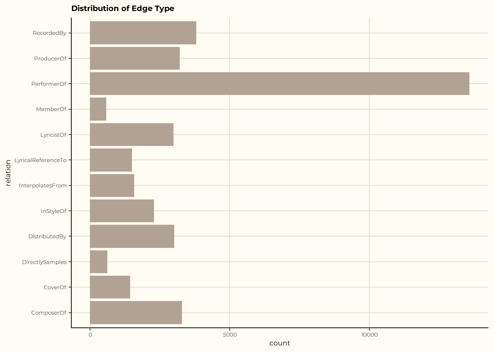

pacman::p_load(tidyverse, jsonlite,
tidygraph, ggraph, igraph, plotly, visNetwork)Take Home Exercise 2
VAST Challenge 2025 Mini-Challenge 1
Overview
For this take-home exercise, we will be working on Mini-Challenge 1 from the VAST Challenge 2025. The objective of this exercise is to design visual analytics methods to track the emergence of a rising artist and forecast the next potential breakout star.
We will address the following questions from the mini-challenge:
1. The Profile of Sailor Shift’s Career :
- Who has Sailor Shift been most influenced by over time?
- Who has she collaborated with and directly or indirectly influenced?
- How has she influenced collaborators within the broader Oceanus Folk community?
2. The Influence of Oceantus Folk to the Music World :
- Was this influence intermittent or did it show a gradual rise?
- What genres and top artists have been most influenced by Oceanus Folk?
- On the conveerse, how has Oceantus Folk changed the rise of Sailor Shift? From which genre does it draw most of its contemporary inspiration?
3. Profile of What it Means to be a Rising Star in the Music Industry
- Visualize the careers of 3 Artist
- Compare and Contrast their rise in Popularity and Influence
- Using this characterization, gives 3 Predictions of the next Oceanus Folk stars with be over the next 5 Years
The Data
We will use the dataset provided in the VAST Challenge 2025 Mini-Challenge 1.
| Attribute | Value |
|---|---|
| File Name | MC1_graph.json |
| Graph Type | Directed Multigraph |
| Number of Nodes | 17,412 |
| Number of Edges | 37,857 |
| Connected Components | 18 |
| Node_Type |
|---|
| Person |
| Song |
| RecordLabel |
| Album |
| MusicalGroup |
| Edge_Type |
|---|
| MemberOf |
| PerformerOf |
| ComposerOf |
| ProducerOf |
| LyricistOf |
| InStyleOf |
| InterpolatesFrom |
| CoverOf |
| LyricalReferenceTo |
| DirectlySamples |
| RecordedBy |
| DistributedBy |
Setting Up
Loading Packages
| Library | Description |
|---|---|
| pacman | A package management tool that helps load, install, and manage R packages more easily. |
| tidyverse | A collection of R packages designed for data science, sharing an underlying design philosophy, grammar, and data structures. |
| jsonlite | A robust and flexible R package for parsing and generating JSON data, commonly used for working with web APIs and structured data files. |
Loading Data
data <- fromJSON("data/MC1_graph.json")
glimpse(data)List of 5
$ directed : logi TRUE
$ multigraph: logi TRUE
$ graph :List of 2
..$ node_default: Named list()
..$ edge_default: Named list()
$ nodes :'data.frame': 17412 obs. of 10 variables:
..$ Node Type : chr [1:17412] "Song" "Person" "Person" "Person" ...
..$ name : chr [1:17412] "Breaking These Chains" "Carlos Duffy" "Min Qin" "Xiuying Xie" ...
..$ single : logi [1:17412] TRUE NA NA NA NA FALSE ...
..$ release_date : chr [1:17412] "2017" NA NA NA ...
..$ genre : chr [1:17412] "Oceanus Folk" NA NA NA ...
..$ notable : logi [1:17412] TRUE NA NA NA NA TRUE ...
..$ id : int [1:17412] 0 1 2 3 4 5 6 7 8 9 ...
..$ written_date : chr [1:17412] NA NA NA NA ...
..$ stage_name : chr [1:17412] NA NA NA NA ...
..$ notoriety_date: chr [1:17412] NA NA NA NA ...
$ links :'data.frame': 37857 obs. of 4 variables:
..$ Edge Type: chr [1:37857] "InterpolatesFrom" "RecordedBy" "PerformerOf" "ComposerOf" ...
..$ source : int [1:37857] 0 0 1 1 2 2 3 5 5 5 ...
..$ target : int [1:37857] 1841 4 0 16180 0 16180 0 5088 14332 11677 ...
..$ key : int [1:37857] 0 0 0 0 0 0 0 0 0 0 ...Data Preparation
Extracting
edges <- as_tibble(data$links)
edge# A tibble: 12 × 1
Edge_Type
<chr>
1 MemberOf
2 PerformerOf
3 ComposerOf
4 ProducerOf
5 LyricistOf
6 InStyleOf
7 InterpolatesFrom
8 CoverOf
9 LyricalReferenceTo
10 DirectlySamples
11 RecordedBy
12 DistributedBy nodes <- as_tibble(data$nodes)
nodes# A tibble: 17,412 × 10
`Node Type` name single release_date genre notable id written_date
<chr> <chr> <lgl> <chr> <chr> <lgl> <int> <chr>
1 Song Breaking Th… TRUE 2017 Ocea… TRUE 0 <NA>
2 Person Carlos Duffy NA <NA> <NA> NA 1 <NA>
3 Person Min Qin NA <NA> <NA> NA 2 <NA>
4 Person Xiuying Xie NA <NA> <NA> NA 3 <NA>
5 RecordLabel Nautical Mi… NA <NA> <NA> NA 4 <NA>
6 Song Unshackled … FALSE 2026 Lo-F… TRUE 5 <NA>
7 Person Luke Payne NA <NA> <NA> NA 6 <NA>
8 Person Xiulan Zeng NA <NA> <NA> NA 7 <NA>
9 Person David Frank… NA <NA> <NA> NA 8 <NA>
10 RecordLabel Colline-Cas… NA <NA> <NA> NA 9 <NA>
# ℹ 17,402 more rows
# ℹ 2 more variables: stage_name <chr>, notoriety_date <chr>Check Missing Values
colSums(is.na(edges))Edge Type source target key
0 0 0 0 colSums(is.na(nodes)) Node Type name single release_date genre
0 0 13797 12801 12801
notable id written_date stage_name notoriety_date
12801 0 15957 16889 16763 Check for Duplicates
edges[duplicated(edges),]# A tibble: 0 × 4
# ℹ 4 variables: Edge Type <chr>, source <int>, target <int>, key <int>nodes[duplicated(nodes),]# A tibble: 0 × 10
# ℹ 10 variables: Node Type <chr>, name <chr>, single <lgl>,
# release_date <chr>, genre <chr>, notable <lgl>, id <int>,
# written_date <chr>, stage_name <chr>, notoriety_date <chr>Knowledge Graph
Mapping from node id to row index
id_map <- tibble(id = nodes$id,
index = seq_len(
nrow(nodes)))Map source and target IDs to row indices
edges <- edges %>%
left_join(id_map, by = c("source" = "id")) %>%
rename(from = index) %>%
left_join(id_map, by = c("target" = "id")) %>%
rename(to = index)Filtering out unmatched edges
edges <- edges %>%
filter(!is.na(from), !is.na(to))Plotting the Whole Graph
graph <- tbl_graph(nodes = nodes, edges = edges, directed = data$directed)Exploratory Data Analysis
Distribution of Edge Type
ggplot(data = edges,
aes(y = `Edge Type`)) +
geom_bar() +
theme_classic() +
theme(plot.background = element_rect(fill = "#FEFCF3",color = NA))Distribution of Node Type
ggplot(data = nodes,
aes(y = `Node Type`)) +
geom_bar() +
theme_classic() +
theme(plot.background = element_rect(fill = "#FEFCF3",color = NA))Understanding the Most Connected Nodes
most_connected <- graph %>%
activate(nodes) %>%
mutate(degree = centrality_degree()) %>%
as_tibble() %>%
arrange(desc(degree)) %>%
slice_head(n = 10) %>%
ggplot(aes(x = reorder(name, degree),
y = degree,
fill = `Node Type`,
text = paste("Name:", name, "<br>Degree:", degree))) +
geom_col() +
coord_flip() +
labs(title = "Top 10 Most Connected Nodes", x = "Name", y = "Degree") +
scale_fill_manual(values = c(
"Person" = "#A8E6CF",
"MusicalGroup" = "#FFD3B6",
"RecordLabel" = "#FFAAA5",
"Song" = "#DCD3FF"
))+
theme_classic() +
theme(plot.background = element_rect(fill = "#FEFCF3",color = NA))
ggplotly(most_connected, tooltip = "text")
Observations
Degree is a measure in network analysis that represents the number of direct connections a node has to other nodes.
Here I plot Top 10 Most Connected Nodes Plot to quickly see the key collaborators and influencers based on their direct connections within the community.
Top Genres
nodes %>%
filter(!is.na(genre)) %>%
count(genre, sort = TRUE) %>%
slice_max(n, n = 10) %>%
ggplot(aes(x = reorder(genre, n), y = n, fill = n)) +
geom_col() +
scale_fill_gradient(low = "#cce5ff", high = "#08306b") +
coord_flip() +
labs(title = "Top 10 Genres", x = "Genre", y = "Count") +
theme(plot.background = element_rect(fill = "#FEFCF3",color = NA)) +
theme_classic() 
Observations
Oceanus Folk is among the top genres which align with the narrative that Sailor Shift’s rise helped the Oceanus Folk genre into the mainstream music genres.
Dream Pop, Indie Folk, and Synthwave are the most represented genres in the dataset.
Sub-graph Plot
Sailor Shift’s Collaborations
sailor_collab <- graph %>%
activate(edges) %>%
filter(`Edge Type` %in% c("PerformerOf", "MemberOf", "ComposerOf", "ProducerOf"))
sailor_index <- sailor_collab %N>%
mutate(row_id = row_number()) %>%
filter(name == "Sailor Shift") %>%
pull(row_id)
neigh_nodes <- neighborhood(sailor_collab, order = 2, nodes = sailor_index)[[1]]
neigh_nodes <- as.integer(neigh_nodes)
sailor_collab_subgraph <- induced_subgraph(sailor_collab, vids = neigh_nodes)
sailor_collab_subgraph <- as_tbl_graph(sailor_collab_subgraph)
nodes_df <- as_tibble(sailor_collab_subgraph %N>%
mutate(id = row_number(),
label = name,
group = `Node Type`))
edges_df <- as_tibble(sailor_collab_subgraph %E>%
mutate(from = as.integer(from),
to = as.integer(to)))
visNetwork(nodes_df, edges_df) %>%
visOptions(highlightNearest = TRUE, selectedBy = "group") %>%
visLegend() %>%
visLayout(randomSeed = 123) %>%
visInteraction(navigationButtons = TRUE) %>%
htmlwidgets::onRender("
function(el, x) {
el.style.background = '#FEFCF3';
}
")